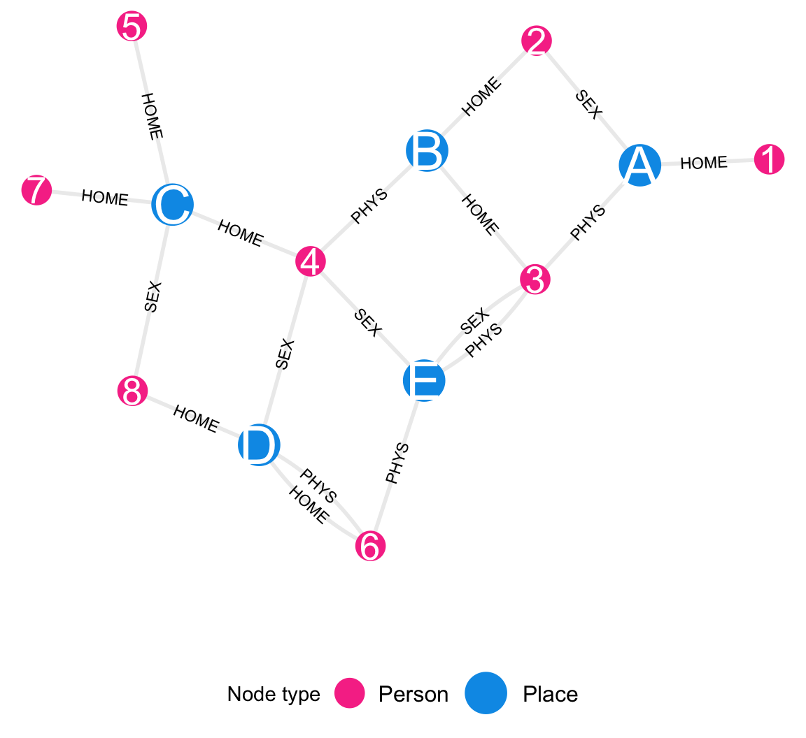
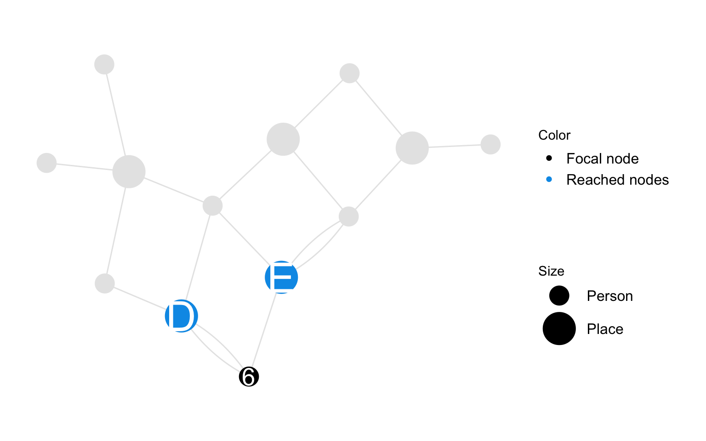
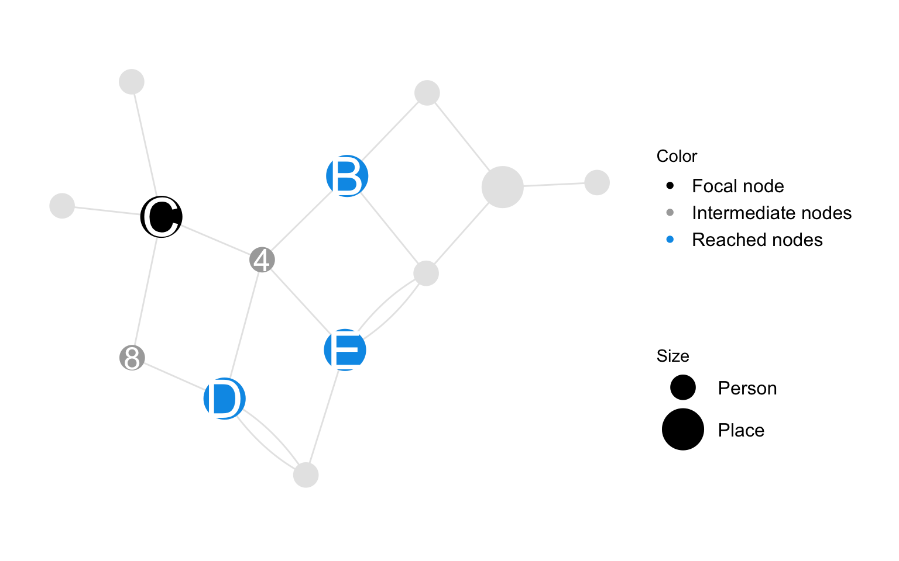
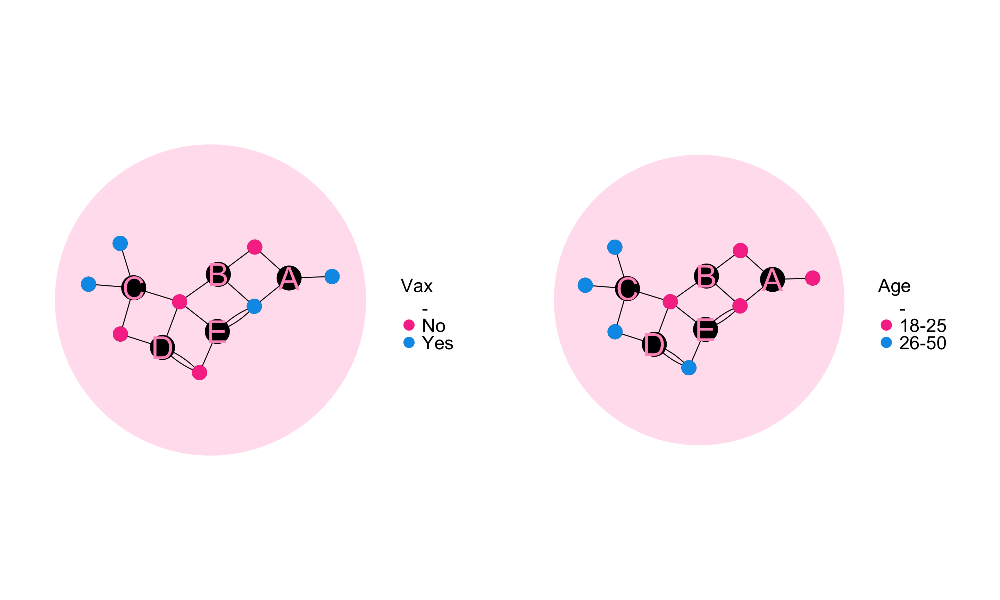
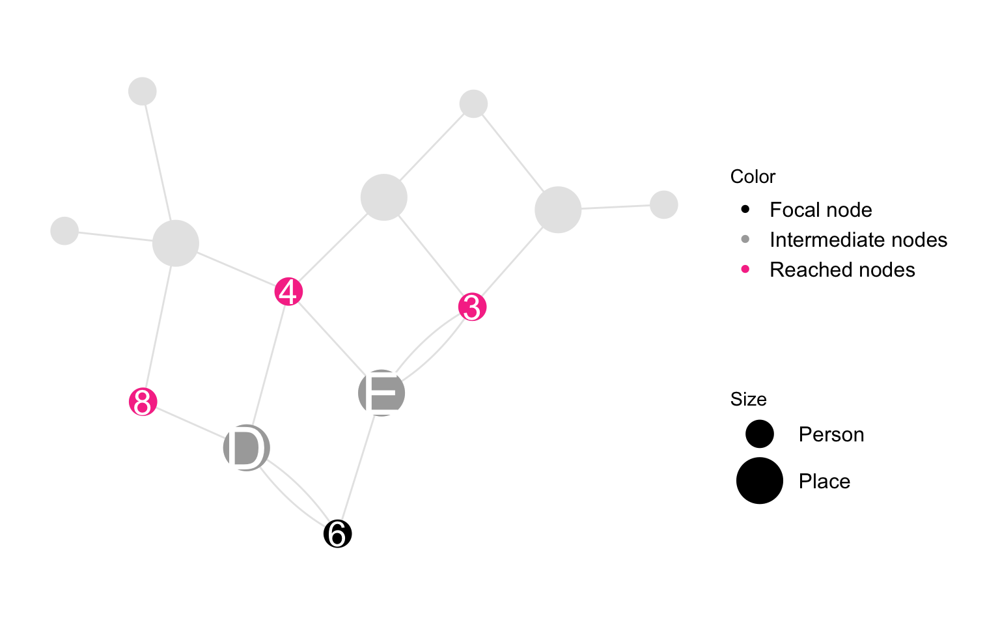

Code
plot_icon(icon_name = "devil", color = "light_purple", shape = 16, alpha = 0, size = 100, image_size = 0.2)We describe the main data object of the SSNAC framework: the person-place graph. We also define some useful statistics for the descriptive analysis.
plot_icon(icon_name = "devil", color = "light_purple", shape = 16, alpha = 0, size = 100, image_size = 0.2)You are town epidemiologist live in a town of 8000 people who live and work across 5 communities within the town. There is news of a novel human transmitted infection coming to the town. You decide to map the spatial and sexual networks of the towns peopple to prepare for a response to the new infection. You take a random sample of 8 townspeople to conduct survey research. Participants were selected independently of each other and all invited participants accepted the invitation
make_example_network_data("bipartite") |>
plot_example_bipartite_network() +
scale_color_mpxnyc(name = "Node type", option = "dark") +
ggplot2::labs(fill = "Node type") +
ggplot2::scale_size_manual(name = "Node type", values = c(7,10)) +
theme_mpxnyc_blank(
plot.margin = ggplot2::margin(0,0,0,0),
legend.position = "bottom"
) 
Figure B.1 shows a simplified data graph. Community district nodes are shown in blue and survey participant nodes in pink. Each edge connects one community district with one survey participant. Three kinds of edges are shown – those that indicate either that the survey participant has a home in the community district, or that they attended a gathering sexual contact or attended a gathering without sexual contact in the community district. For instance, Participant 3 has a home in Community District B, he attended a gathering with no sexual contact in Community District A, and he attended two gathering (one sexual and one non-sexual) in Community District E.
We can examine patterns in the characteristics of participants. These include variables like age and vaccination status. It is also useful to include a variable for node type to differentiate person nodes form place nodes.
make_example_network_data() |>
data.frame() |>
dplyr::select(-label) |>
gt::gt() |>
gt::tab_options(table.font.size =12, data_row.padding = gt::px(1))| Name | Node type | Age | Vax |
|---|---|---|---|
| Person 1 | Person | 18-25 | Yes |
| Person 2 | Person | 18-25 | No |
| Person 3 | Person | 18-25 | Yes |
| Person 4 | Person | 18-25 | No |
| Person 5 | Person | 26-50 | Yes |
| Person 6 | Person | 26-50 | No |
| Person 7 | Person | 26-50 | Yes |
| Person 8 | Person | 26-50 | No |
| Community a | Place | - | - |
| Community b | Place | - | - |
| Community c | Place | - | - |
| Community d | Place | - | - |
| Community e | Place | - | - |
make_example_network_data() |>
dplyr::mutate(type, age) |>
tidygraph::activate(edges) |>
dplyr::mutate(from_name = tidygraph::.N()$name[from], to_name = tidygraph::.N()$name[to]) |>
data.frame() |>
dplyr::arrange(from, to) |>
dplyr::transmute(From = from_name, To = to_name, Relation = relation) |>
gt::gt() |>
gt::tab_options(table.font.size =12, data_row.padding = gt::px(1))| From | To | Relation |
|---|---|---|
| Person 1 | Community a | HOME |
| Person 2 | Community a | GSEX |
| Person 2 | Community b | HOME |
| Person 3 | Community a | PHYS |
| Person 3 | Community b | HOME |
| Person 3 | Community e | GSEX |
| Person 3 | Community e | PHYS |
| Person 4 | Community b | PHYS |
| Person 4 | Community c | HOME |
| Person 4 | Community d | GSEX |
| Person 4 | Community e | GSEX |
| Person 5 | Community c | HOME |
| Person 6 | Community d | PHYS |
| Person 6 | Community d | HOME |
| Person 6 | Community e | PHYS |
| Person 7 | Community c | HOME |
| Person 8 | Community c | GSEX |
| Person 8 | Community d | HOME |
Examine patterns in the characteristics of the participant along with the places he is related to. We can also examine patterns in the characteristics of places in the context of the people those places are related to. In brief, examining local structure entails understanding how each node is related to the rest of the graph. We define spatial reach, social reach, spatial catchment, and social catchment.
Spatial reach is a person-node characteristic. It measures the number of relations to places the participant has. Note that we count relations and not places since one participant might have several relations with the same place.
make_reach_diagram_data() |>
plot_reach_diagram() +
theme_mpxnyc_blank(
plot.margin = ggplot2::margin(40,20,40,20),
legend.position = "right"
) 
Spatial reach of person \(i\) is the number of relations person node \(i\) has with place nodes in the person-place graph. Let \(\psi(i,j)\) be the number of edges connecting person \(i\) and place \(j\) in the person-place graph. Then:
\[ R_{i} = \sum_{ j }{ \Psi (i,j)} \]
Spatia catchment is a place-node characteristic which measures the mutual influence between spatial untis as a result of relations with shared person nodes. It counts the number of minimal paths that link the focal node with other place nodes in the graph. Note that the number of paths that link two place nodes who are connected through a given person node is the product of the number of relations each place node has with the given person node.
make_reach_diagram_data(
focal_node = "Community c",
alter_nodes = c("Community d", "Community b", "Community e"),
intermediate_nodes = c("Person 8", "Person 4")
) |>
plot_reach_diagram(
intermediate_color = "darkgrey"
) +
theme_mpxnyc_blank(
plot.margin = ggplot2::margin(40,20,40,20),
legend.position = "right"
) 
Spatial catchment of place \(j\) via subgroup \(A\) is defined as the strength of connection between place node \(j\) and other place nodes in the graph when we consider their shared relations with person nodes in subgroup \(A\). Strength of connection between two places \(j\) and \(k\) is defined as the number of relations place nodes \(j\) and \(k\) have with common person nodes which belong to subset \(A\). The spatial catchment of place \(j\) is defined as \(r_{i\rightarrow \mathscr{N}_P} = r_{i}\)
\[ r_{j\rightarrow A} = \sum_{i }\sum_{k }{ \Psi(i,j) \Psi(i,k)A_i} \\ \]
Measures of global structure quantify some aspect of the overall pattern of connection among the people and spaces connected by the data graph.
Spatial mixing is the extent to which person nodes with a given set of characteristics are connected to a common set of place nodes with person nodes with some other set of characteristics.
base_color = "black"
reached_color = "#009BE8"
intermediate_color = "#C5EFFF"
focal_color = "black"
group_affiliation <- data.frame(
name = c(paste("Person", 1:8)),
group = c(
"Group B",
"Group A",
"Group A",
"Group B",
"Group A",
"Group B",
"Group B",
"Group A"
)
)
unmixed <- make_reach_diagram_data() |>
tidygraph::mutate(type_color = NA) |>
tidygraph::activate(nodes) |>
tidygraph::left_join(group_affiliation) |>
tidygraph::mutate(group = ifelse(type == "Place", "Place", group)) |>
ggraph::ggraph(layout = "kk") +
ggforce::geom_circle(ggplot2::aes(x0 = 0.5, y0 = 0, r = 2.3), data = data.frame(xmin = -3, xmax = 3, ymin = -1, ymax = 5), linewidth = 0, fill = "#FF99C5", alpha = 0.3) +
ggraph::geom_edge_fan(ggplot2::aes(color = type_color), show.legend = FALSE) +
ggraph::geom_node_point(ggplot2::aes( size = group), color = base_color) +
ggraph::geom_node_point(ggplot2::aes(color = age, size = group)) +
ggraph::geom_node_text(ggplot2::aes(label = label, size = group, filter = type == "Place"), color = "#FF99C5", show.legend = FALSE) +
ggplot2::scale_size_manual(name = "Size", values = c(7,7, 12), guide = "none") +
scale_color_mpxnyc( name = "Age", option = "manual", na.value = base_color, values = c( "18-25" = "#F73C95", "26-50" = "#009BE8", "Place" = "black"), na.translate = FALSE) +
ggraph::scale_edge_color_manual(values = c("black"), na.value = base_color) +
theme_mpxnyc_blank( legend.position = "bottom"
) +
ggplot2::coord_fixed() +
ggplot2::theme(
legend.text = ggplot2::element_text(size = 20),
legend.title = ggplot2::element_text(size = 20),
legend.ticks = ggplot2::element_line(size = 20),
legend.byrow = TRUE,
legend.position = "right"
) +
ggplot2::guides(color = ggplot2::guide_legend(override.aes = list(size = 5))) # Adjust legend dot size base_color = "black"
reached_color = "#009BE8"
intermediate_color = "#C5EFFF"
focal_color = "black"
group_affiliation <- data.frame(
name = c(paste("Person", 1:8)),
group = c("Group B", "Group B", "Group B", "Group B", "Group A", "Group A", "Group A", "Group A")
)
mixed <- make_reach_diagram_data(
focal_node = "Community c",
alter_nodes = c("Community d", "Community b", "Community e"),
intermediate_nodes = c("Person 8", "Person 4")
) |>
tidygraph::mutate(type_color = NA) |>
tidygraph::activate(nodes) |>
tidygraph::left_join(group_affiliation) |>
tidygraph::mutate(group = ifelse(is.na(group), "Place", group)) |>
ggraph::ggraph(layout = "kk") +
ggforce::geom_circle(ggplot2::aes(x0 = 0.5, y0 = 0, r = 2.3), data = data.frame(xmin = -3, xmax = 3, ymin = -1, ymax = 5), linewidth = 0, fill = "#FF99C5", alpha = 0.3) +
ggraph::geom_edge_fan(ggplot2::aes(color = type_color), show.legend = FALSE) +
ggraph::geom_node_point(ggplot2::aes( size = group), color = base_color) +
ggraph::geom_node_point(ggplot2::aes(color = vax, size = group)) +
ggraph::geom_node_text(ggplot2::aes(label = label, size = group, filter = type == "Place"), color = "#FF99C5", show.legend = FALSE) +
ggplot2::scale_size_manual(name = "Size", values = c(7,7, 12), guide = "none") +
scale_color_mpxnyc(name = "Vax", option = "manual", na.value = base_color, values = c( "No" = "#F73C95", "Yes" = "#009BE8", "Place" = "black"), na.translate = FALSE) +
ggraph::scale_edge_color_manual(values = c("black"), na.value = base_color) +
theme_mpxnyc_blank( legend.position = "bottom"
) +
ggplot2::coord_fixed() +
ggplot2::theme(
legend.text = ggplot2::element_text(size = 20),
legend.title = ggplot2::element_text(size = 20),
legend.ticks = ggplot2::element_line(size = 20),
legend.byrow = FALSE,
legend.position = "right"
) +
ggplot2::guides(color = ggplot2::guide_legend(override.aes = list(size = 5, ncol = 1))) # Adjust legend dot size
cowplot::plot_grid(mixed, unmixed, rel_widths = c(1,1), nrow = 1)
The spatial mixing coefficient from A to B quantifies the degree to which egos in group A preferentially live in or attend gatherings in community districts they are likely to encounter members of group B. It is defined as the ratio of preference to prevalence minus one.
\[ P_{A \rightarrow B} = \frac{1}{E[B]} \frac{1}{n} \sum_{i=1}^{n} E[{R_{i \rightarrow B} /R_i} |A_i = 1] - 1 \]
In studies which elicit participants’ primary residence along with other places they are related to, it may be of interest to understand the pattern of movement from home to related places and back again.
The movement matrix is a square matrix whose \(kl^{th}\) entry, \(m(k,l)\), is defined as the count of outings from home in community district \(k\) to a gathering in community district \(l\). Say \(d^H(i)\) is the home community district of participant \(i\).
\[ m(j,k) = \sum_i D(i,j) \sum_{k }( \Psi(i,k) - D(i,k) ) \]
The spatial concentration proportion \(c(k)\) quantifies the degree to which a community district is over-represented among destination community districts compared to home districts in the movement matrix. It is the difference of the margins of the movement matrix.
\[ c(k) = \frac{\sum_l{m(l,k)} - \sum_k{m(l,k)}}{\sum_{l,k}{m(l,k)}} \]
Lead author: Keletso Makofane, MPH, PhD. Editor: Nicholas Diamond, MPH. (Published: June 2025).
Acknowledgements: The analytic framework for this project developed over an extended period of time, beginning during my PhD dissertation at Harvard University under the supervision of Lisa Berkman, Eric Tchetgen Tchetgen, and a former mentor). In particular, the analysis borrows from the central paper in my dissertation, which shows how the wealth of non-coresident extended family members is protective against mortality. For publication-ready copies of the paper referenced below, which was accepted on 19 October 2023, please contact the editorial board of the American Journal of Epidemiology directly.
Makofane, K., Tchetgen Tchetgen, E. J., Bassett, M. T., Berkman, L. F. (Accepted 2023, final manuscript submitted January 2025). Networked wealth and mortality in the Agincourt Health and Demographic Surveillance System 2009 – 2018. American Journal of Epidemiology.
Social reach
Social reach is a person-node characteristic which measures the potential for interaction with other people through shared relations to places. It counts the number of minimal paths that link the focal node with other person nodes in the graph. Note that the number of paths that link two person nodes who are connected through a given place node is the product of the number of relations each person node has with the given place node.
Code

Social reach of person \(i\) among subgroup \(A\) is the number of person nodes in set \(A \subset \mathscr{N}_P\) that are connected to person node \(i\) through shared places. i.e. either because both nodes have a residence or gathering in at least one common community district. Social reach of person \(i\) is defined as \(R_{i} = R_{i\rightarrow \mathscr{N}_P}\)
\[ R_{i\rightarrow A} = \sum_{j}{\sum_{k }{ \Psi(i,j) {\Psi(k,j)} A_k}} \]